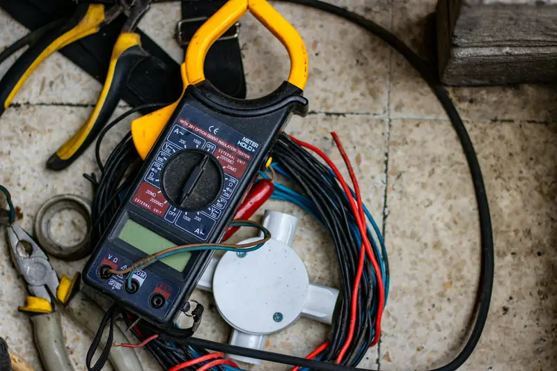
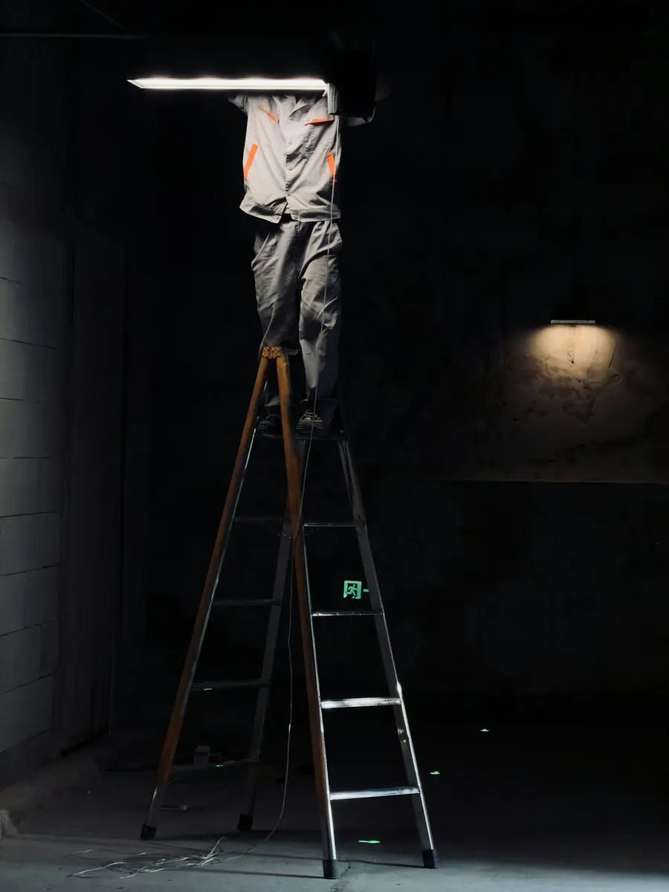

Privati
Un guasto la sera o nel weekend non deve aspettare il lunedì.

HomeAssistenza H24
Assistenza H24Per guasti e urgenze siamo raggiungibili giorno e notte: impianti elettrici, citofoni, cancelli, allarmi e telecamere.

Assistenza H24 a Bergamo: interveniamo a Bergamo, Treviglio, Dalmine e in tutta la provincia.
Un guasto la sera o nel weekend non deve aspettare il lunedì.
Riduciamo i tempi di fermo quando un impianto si blocca.
Un riferimento per l'amministratore quando qualcosa smette di funzionare.
oppure 327 670 9209
Tecno-Service Srl · Viale Lombardia 6, 24050 Bariano (BG)